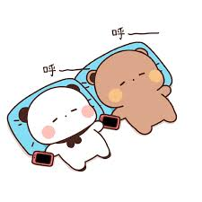
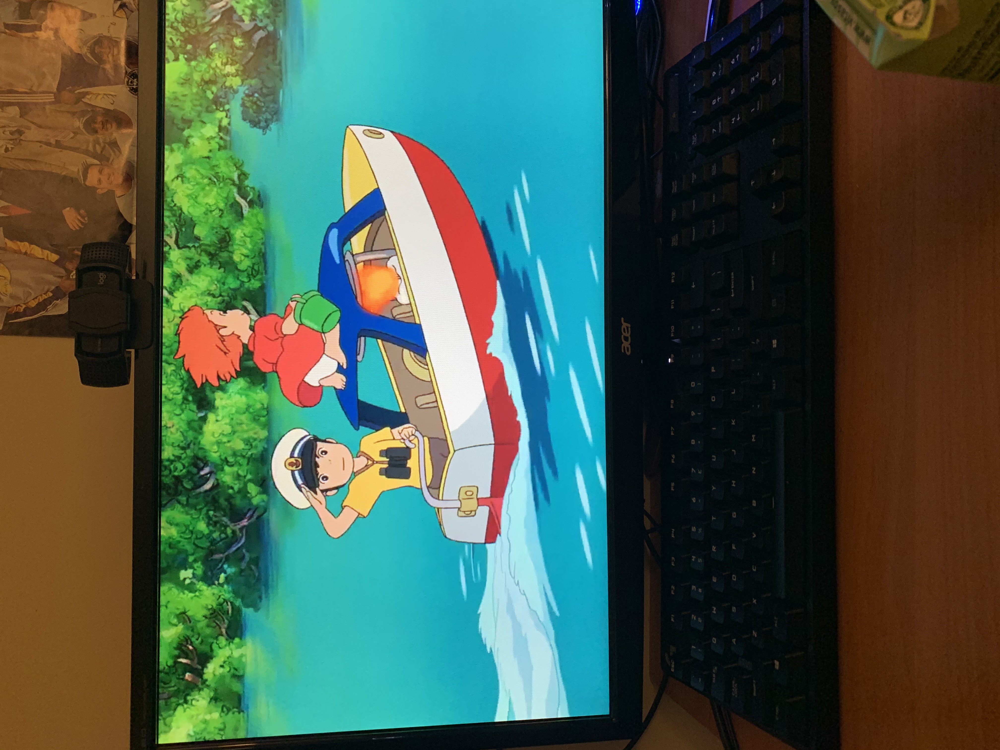
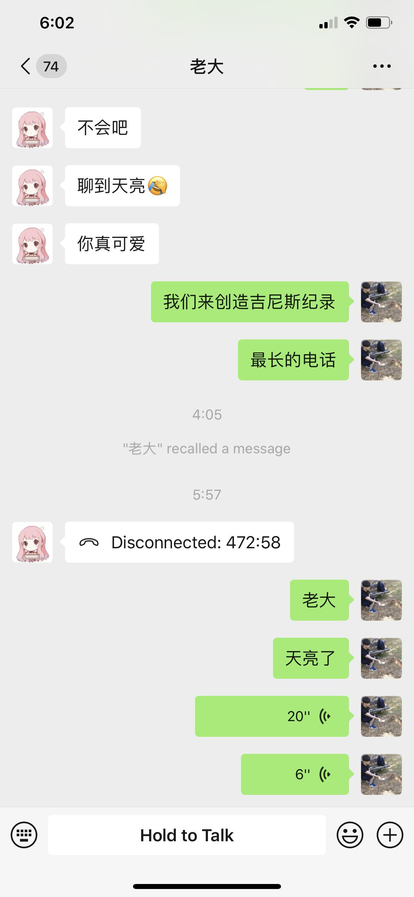
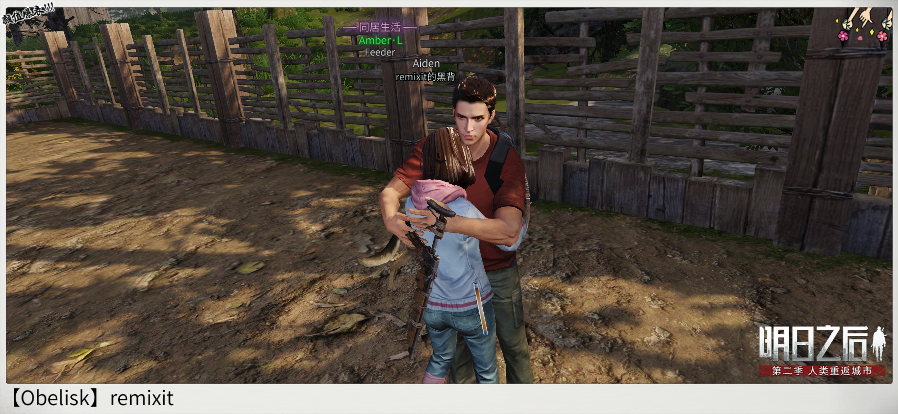
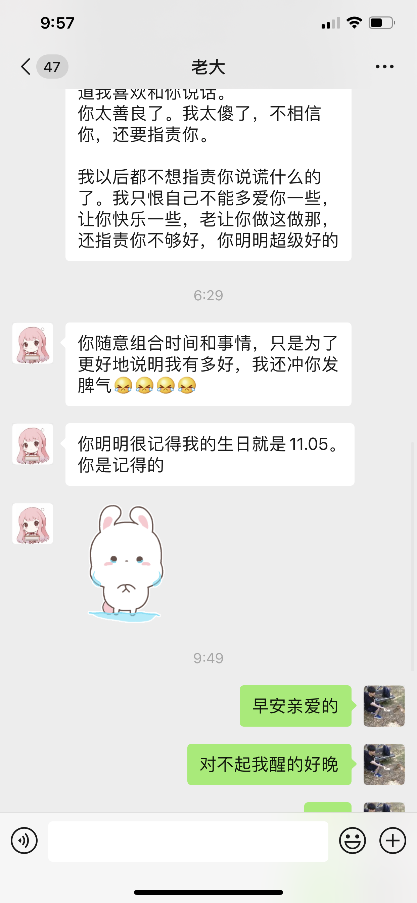

5: The Love Tale Continues
Our love is like an unstoppable force, now enter the LDR! (Long Distance Relationship)
异国异地恋根本难不倒我们。
当全世界都被疫情笼罩的时候，我们的感情在一天天的电话中逐渐升温。
我们真的好喜欢跟对方说话啊！跟喜欢的人说话真的是一个让人上瘾的事情。
当Amber拿起电话的那一刻，我就觉得自己像踏入了另一个时空一样。
虽然那个空间很新颖，但是Allen不觉得那里很陌生。
He knows he belongs there with his favorite little fella.
两个最爱煲电话粥的大话痨就这样产生啦！

说到两个人都睡过去为止
2020这一年当中我们一起做了好多事情，经历了好多开心的事，然后偶尔也有难过的时候。
我们的第一次视频对话：

猪猪那个时候好紧张，为了在你面前摆出自己最好的样子出了一身的大汗😱
我们一起看的第一场电影：

Ponyo
从这个电影当中我更加了解了你，而且我看的时候真的感动到哭了。
Let me be your Sousuke so I can treat you like my Ponyo.
我们最长的一次电话：

Yup, we love to talk, we really do.
我们第一次一起玩游戏：

一起入坑明日之后
就像你说的一样，“至少我们在游戏中的两个小人可以相聚在一起”。
This was a lot of fun as well, thank you for introducing me to your favorite game!
我们第一次吵架：

Our journey was not all sunshine and rainbows, there were times that we fought and made each other sad as well.